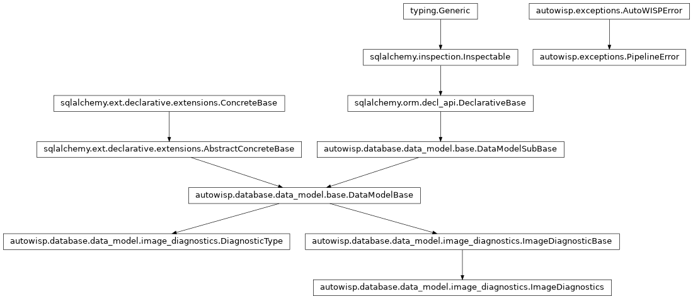

autowisp.browser_interface.diagnostics.quantities module
Class Inheritance Diagram

Which quantities this project can draw, and what each one is.
An axis, a row and a section all name a quantity: a recorded
DiagnosticType, an expression built on top of one, or jd. What
exists to be named is a question about the open project rather than about
any row, and it is asked once per page rather than once per row, which is
why it is answered here and not in series_table – that module is
about what a row of the table means.
Nothing here evaluates a quantity or knows what one is worth: reading
values belongs to autowisp.diagnostics.expression_series, and what
an expression means to autowisp.diagnostics.expressions. What is
asked here is only which names are on offer.
- autowisp.browser_interface.diagnostics.quantities.describe_quantity(name, expressions, descriptions)[source]
Return what a section header says about the quantity it draws.
A collapsed section still has to say what is plotted in it, so that the answer can be read rather than guessed from a name – which for an expression is whatever its author called it.
- Parameters:
name (str) – The quantity, as the selectors and the URL name it.
expressions (dict) – The library,
{name: expression}.descriptions (dict) – What each name means: the recorded diagnostics’ descriptions and the expressions’ together, as
get_diagnostic_descriptions()andexpression_data.get_expression_descriptionsreturn them.
- Returns:
name,expressionanddescription. Theexpression is empty for anything not built from one – a recorded diagnostic is a measurement rather than a formula, and has none to show.
- Return type:
- autowisp.browser_interface.diagnostics.quantities.get_available_diagnostics(recorded, expressions)[source]
Return every quantity an axis may be set to.
One flat list rather than diagnostics and expressions kept apart: an axis reads a name, and a recorded diagnostic is simply an expression of itself as far as anything downstream is concerned. Sharing one name space is what lets the selectors, the URL and the series table treat all of them alike, and it is why an expression may not take a diagnostic’s name.
- Parameters:
recorded (list) – What
get_recorded_diagnostics()found.expressions (dict) – The library,
{name: expression}.
- Returns:
jd, then every recorded diagnostic, then theexpressions this project has the data to draw.
- Return type:
- autowisp.browser_interface.diagnostics.quantities.get_available_expressions(expressions, recorded)[source]
Return the expressions this project has the data to draw.
Availability, not validity. Every stored expression is valid in every project – the vocabulary is the same everywhere, see
autowisp.diagnostics.diagnostic_types– so filtering bycheck_expression()would filter nothing and offer all of them everywhere. What decides whether one is offered here is whether the diagnostics it reaches, transitively, have actually been recorded.- Parameters:
expressions (dict) – The library,
{name: expression}.recorded (list) – What
get_recorded_diagnostics()found. The raw names, since an expression may reference a concretepixel_q*rather than the family.
- Returns:
- The names whose every diagnostic is recorded here,
alphabetically.
- Return type:
- autowisp.browser_interface.diagnostics.quantities.get_diagnostic_descriptions(db_session)[source]
Return
{name: description}for every recorded diagnostic type.One query for the whole table rather than one per section: a page may show any number of sections, and the table is small enough that asking for all of it costs less than asking repeatedly.
- Parameters:
db_session – An active SQLAlchemy database session.
- Returns:
- The descriptions, with the empty string where a type
records none.
- Return type:
- autowisp.browser_interface.diagnostics.quantities.get_quantile_names(db_session)[source]
Return the
pixel_q*diagnostic names in use, quantile order.
- autowisp.browser_interface.diagnostics.quantities.get_recorded_diagnostics(db_session)[source]
Return the
DiagnosticTypenames anything has recorded in this project.A per-type
EXISTSprobe rather than aGROUP BYover the whole ofimage_diagnostics: the question is only which names are in use, and the grouped form has to walk every row to answer it.The names come back raw, individual
pixel_q*entries included – beforeget_available_diagnostics()collapses them into the family name. That is what an expression has to be judged against, since one may reference a concrete quantile.- Parameters:
db_session – An active SQLAlchemy database session.
- Returns:
The names in use, in
DiagnosticTypeorder.- Return type:
- autowisp.browser_interface.diagnostics.quantities.next_section_marker(taken)[source]
Return the marker a new section’s rows should start with.
Telling quantities apart by shape and channels apart by colour is only a starting point: every row’s marker stays editable, so a user who would rather tell them apart some other way sets it. What this decides is what a section looks like before anyone touches it.
The first marker no section is using, so that one freed by a removed section is taken up again rather than left idle while a later section doubles up on one still in use. Once every marker is spoken for, they cycle by the number of sections – the ninth section repeating the first marker, the tenth the second – rather than piling every further section onto the same one.
- Parameters:
taken (iterable) – The markers the sections already on the page start with, one per section. Counted rather than deduplicated, since the count is what the cycle turns on.
- Returns:
The marker to start with.
- Return type:
- autowisp.browser_interface.diagnostics.quantities.section_markers = 'os^v<>x+'
The markers a section’s rows start with, in the order sections take them. Points first and in falling order of how readily one is told from another at a glance, so that the commonest case – two or three sections – gets the clearest pairs.